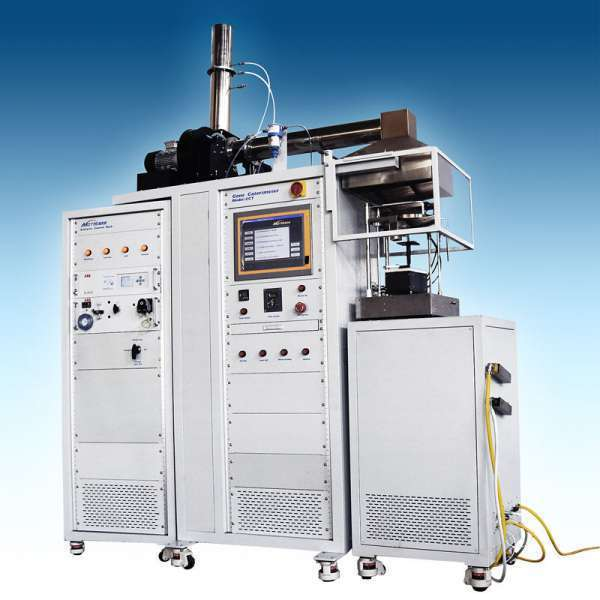
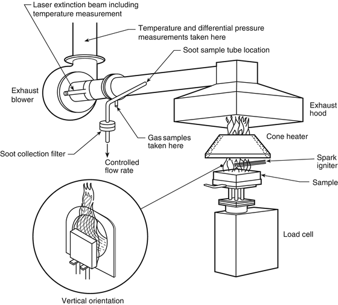

콘칼로리미터(Cone calorimeter)는 불연재료와 난연재료의 적합여부를 시험하는 장비로 시험시편에서 발생하는 열방출율, 연기발생률, 착화 시간 등을 측정하는 연소성능시험입니다.
「건축물 마감재료의 난연성능 및 화재 확산 방지구조 기준」 제3조(준불연재료) 제5조(시험재 및 시험횟수 등)에 따라 준불연재료 적합기준에 콘칼로리미터법이 규정되어 있습니다.
제3조(준불연재료) 준불연재료는 다음 각호에 적합하여야 한다.
1. 한국산업규격 KS F ISO 5660-1[연소성능시험-열 방출, 연기 발생, 질량 감소율-제1부:열 방출률(콘칼로리미터법)]에 따른 가열시험 개시 후 10분간 총방출열량이 8MJ/㎡ 이하이며, 10분간 최대 열방출률이 10초 이상 연속으로 200kW/㎡를 초과하지 않으며, 10분간 가열 후 시험체를 관통하는 방화상 유해한 균열, 구멍 및 용융(복합자재의 경우 심재가 전부 용융, 소멸되는 것을 포함한다) 등이 없어야 한다.


준불연 가등급 EPS 단열재 DK보드
건축용 / 드라이비트용 / 판넬용
문의 1855-2240